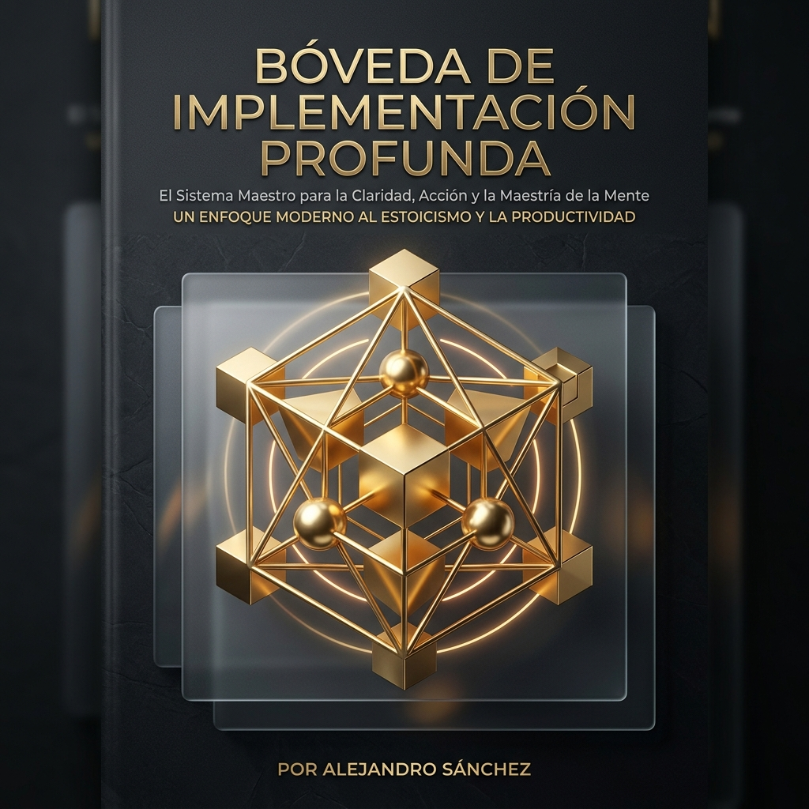

Aplica la ley de Epicteto antes del descanso. Filtra la memoria de trabajo clasificando tus variables. Al presionar el cierre físico, tu mente aprende a apagar y descartar lo incontrolable para consolidar un sueño regenerativo de mayor profundidad.
Explora y ejecuta el protocolo neurobiológico completo noche a noche para reconfigurar tu sistema nervioso.
Genera ondas de ataraxia en tiempo real para disolver el cortisol e inducir relajación parasimpática.

Libera tu córtex prefrontal de la sobrecarga operativa. Este manual técnico fusiona la filosofía estoica práctica con la neurobiología aplicada para erradicar la parálisis por análisis y el estrés ejecutivo de alta dirección.